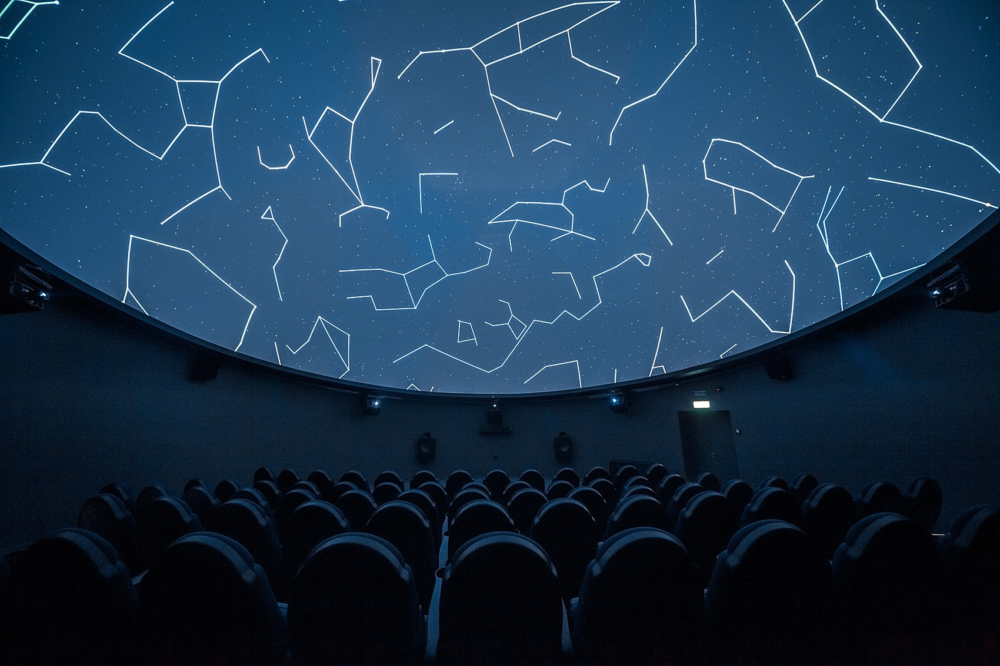

ДИВУЄ. НАДИХАЄ. ЗАХОПЛЮЄ.
Модернізований Планетарій Noosphere 2.0 – це сучасний науково-просвітницький центр астрономії, науки й техніки, який базується на принципах STEAM-освіти, ілюструючи природний зв'язок між навчальними дисциплінами, першочерговість експерименту й практики над теорією.
МІСІЄЮ ПРОЄКТУ МИ ОБРАЛИ НАДИХАТИ ТА ВИХОВУВАТИ ПОКОЛІННЯ МАЙБУТНІХ ДОСЛІДНИКІВ ВСЕСВІТУ ЗАДЛЯ ВІДНОВЛЕННЯ ПЕРШОСТІ УКРАЇНИ У ВИСОКОТЕХНОЛОГІЧНИХ, ЗОКРЕМА, КОСМІЧНИХ, СФЕРАХ.
МЕТА
ТОМУ, НАША МЕТА – ЦЕ ЗРОЗУМІЛО, ЛЕГКО Й ЦІКАВО РОЗШИРЮВАТИ СВІТОГЛЯД ВІДВІДУВАЧІВ, НАДИХАТИ ДІТЕЙ ТА ДОРОСЛИХ ІЗ ЗАДОВОЛЕННЯМ ТА ЗАВЗЯТТЯМ ЗАНУРЮВАТИСЯ У ПІЗНАННЯ ДИВОВИЖНОГО ВСЕСВІТУ.
ВІЗІЯ
НАША ГЛОБАЛЬНА ВІЗІЯ – ФОРМУВАННЯ В УКРАЇНІ СУЧАСНОЇ, ДОСТУПНОЇ КОЖНОМУ, ПРОСВІТНИЦЬКОЇ ЕКОСИСТЕМИ, ЯКА БАЗУЄТЬСЯ НА ПРИНЦИПАХ STEAM-ОСВІТИ ТА СПРИЯЄ РОЗВИТКУ ІННОВАЦІЙНОСТІ ТА КРИТИЧНОГО МИСЛЕННЯ ОСОБИСТОСТІ.
МИ ЦІНУЄМО:
Науку та науковий підхід
Ми любимо науку. Ми заохочуємо гостей разом досліджувати, експериментувати, критично мислити та отримувати власний неоціненний досвід у пошуку нових рішень, спираючись на наукові відкриття
Пристрасть та захоплення
Ми отримуємо задоволення від можливості вражати та надихати наших гостей. Ми прагнемо спонукати кожного зануритись у зворушливе пізнання дивовижного Всесвіту та визначення місця людини у ньому
Свободу
Ми закликаємо всіх і кожного сміливо мріяти та вільно почуватися разом, толерантно ставитися один до одного. Ми створюємо умови для радісної, вільної й науково-творчої атмосфери та винахідництва
Розвиток та еволюцію
Ми підтримуємо новаторство та інноваційність у всіх сферах життя, інвестуючи у розвиток науково-технічного світогляду кожного та розширення масштабів мислення суспільства в цілому
Віподвідальність та довіру
Ми дякуємо за довіру у нашому прагненні змінити світ. Ми цінуємо простір кожної людини, суспільства та всієї Планети, тому відповідальні за власні вчинки перед собою та майбутніми поколіннями
НАШІ ЗАВДАННЯ
ПОШИРЮВАТИ КУЛЬТУРУ КОСМІЧНОЇ ОБІЗНАНОСТІ СЕРЕД ДІТЕЙ ШКІЛЬНОГО ВІКУ, ЗВАЖАЮЧИ НА ВИСОКУ АКТУАЛЬНІСТЬ КОСМІЧНИХ ДОСЛІДЖЕНЬ У СВІТІ
- Розміщення у розкладі максимальної кількості сеансів для організованих груп школярів
- Створення та поширення серед навчальних закладів готових просвітницьких програм з астрономії
- Проведення позашкільних занять, космічних таборів, фестивалів, квестів та конференцій із науковим контекстом
- Ознайомлення відвідувачів з історією розвитку науки, сучасними досягненнями та перспективами щодо освоєння та дослідження космосу
- Проведення благодійних заходів з метою підтримки освітніх закладів, дітей з особливостями розвитку
- Популяризація книжок, ігор й товарів широкого вжитку за космічною тематикою
ПІДВИЩИТИ ЦІННІСТЬ ІНЖЕНЕРНО-ТЕХНІЧНИХ ПРОФЕСІЙ СЕРЕД УКРАЇНСЬКОЇ МОЛОДІ ЗАДЛЯ ВІДНОВЛЕННЯ РЕЙТИНГУ УКРАЇНИ У КОСМІЧНІЙ СФЕРІ
- Проведення ранньої професійної орієнтації молоді
- Організація взаємодії з навчальними й науковими закладами, а також з технологічними компаніями задля формування просвітницької інфраструктури та демонстрації перспектив вибору технічних спеціальностей для молоді
ПІДТРИМУВАТИ СІМЕЙНІ ЦІННОСТІ, ПРОВОДИТИ КОМАНДОУТВОРЮЮЧІ ЗАХОДИ, СПРЯМОВАНІ НА УЧАСТЬ РІЗНОВІКОВИХ ГРУП
- Створення сприятливих умов для сумісної діяльності учасників з особами різного віку в одній команді, для виконання конкретних завдань
- Проведення сімейних заходів, майстер-класів, квестів з астрономічної тематики
- Організація спостережень за небесними об'єктами
СТВОРИТИ СПРИЯТЛИВІ УМОВИ ДЛЯ ВТІЛЕННЯ ІДЕЙ, ЯКІ ВИНИКАЮТЬ ПРИ ЗНАЙОМСТВІ З ФУНДАМЕНТАЛЬНИМИ НАУКАМИ ТА СУЧАСНИМИ ТЕХНІЧНИМИ ДОСЯГНЕННЯМИ
- Створення власних програм на актуальні теми космічної галузі
- Проведення STEAM-занять, курсів та марафонів
- Організація навчання за ігровими методами
ЗРОБИТИ НАУКУ ПРО ВСЕСВІТ ДОСТУПНОЮ КОЖНОМУ, НЕЗАЛЕЖНО ВІД РІВНЯ ПОЧАТКОВИХ ЗНАНЬ, ОСОБЛИВОСТЕЙ РОЗВИТКУ, ФІНАНСОВИХ МОЖЛИВОСТЕЙ АБО МІСЦЯ ЗНАХОДЖЕННЯ
- Надихаємо дітей, виховуючи дослідників
- Зацікавлюємо та даруємо враження
- Робимо дослідження стилем життя
- Розширюємо обрії знань за межі Земної орбіти